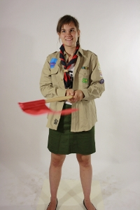
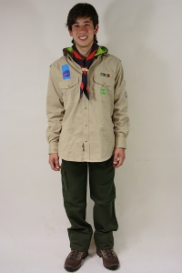

Uniform
Welke kledij doe ik het beste aan?
Met het dragen van het uniform toon je dat je scout of gids bent en verwijs je naar de waarden van de beweging. Het uniform geeft leden en leiding de mogelijkheid om iets gemeenschappelijk te veruiterlijken en laat toch ruimte voor een persoonlijke touch..
Het uniform bestaat voor iedereen uit een aantal dezelfde eenvoudige basisstukken: een beige hemd en een groene rok of korte/lange broek. Kapoenen hebben geen voorgeschreven uniform maar alle stukken zijn ook in kapoenenmaten beschikbaar. Voor de welpen en kabouters zijn er speciale groene petjes te verkrijgen.
Ook wordt er verwacht dat elk lid een groepssjaaltje heeft. In scouts Averbode zijn deze rood-grijs en steeds verkrijgbaar bij de (groeps)leiding. Je uniform en zijn toebehoren kan je zelf kopen of bestellen via de Hopper. We organiseren ook jaarlijks een paskoffer in het begin van het scoutsjaar waarbij iedereen zijn outfit op voorhand al eens kan passen vooraleer deze wordt besteld. Al de leden en ouders worden hier tijdig over geïnformeerd, zodat niemand uit de boot valt..
 